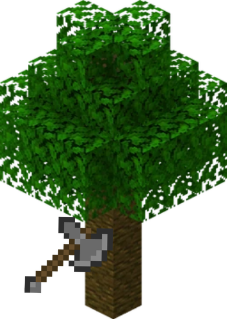
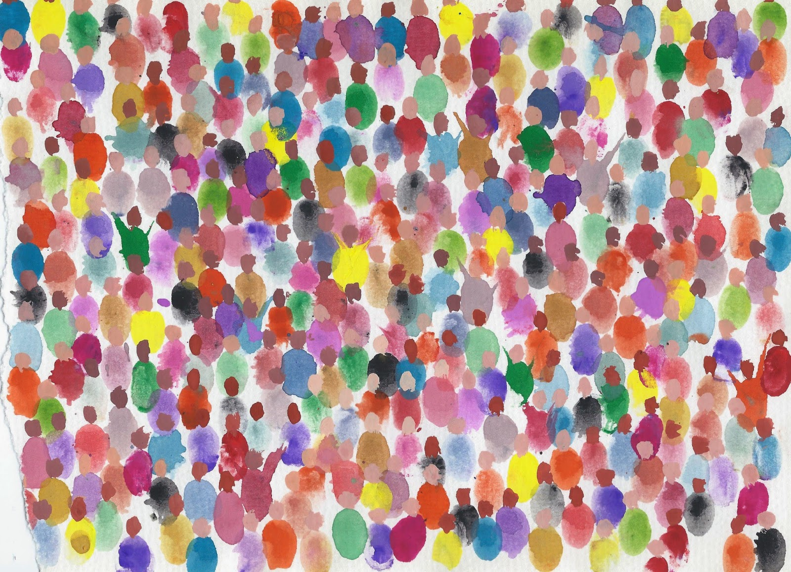
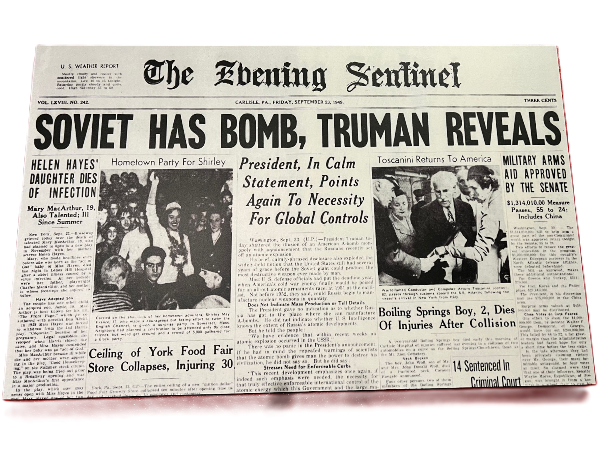
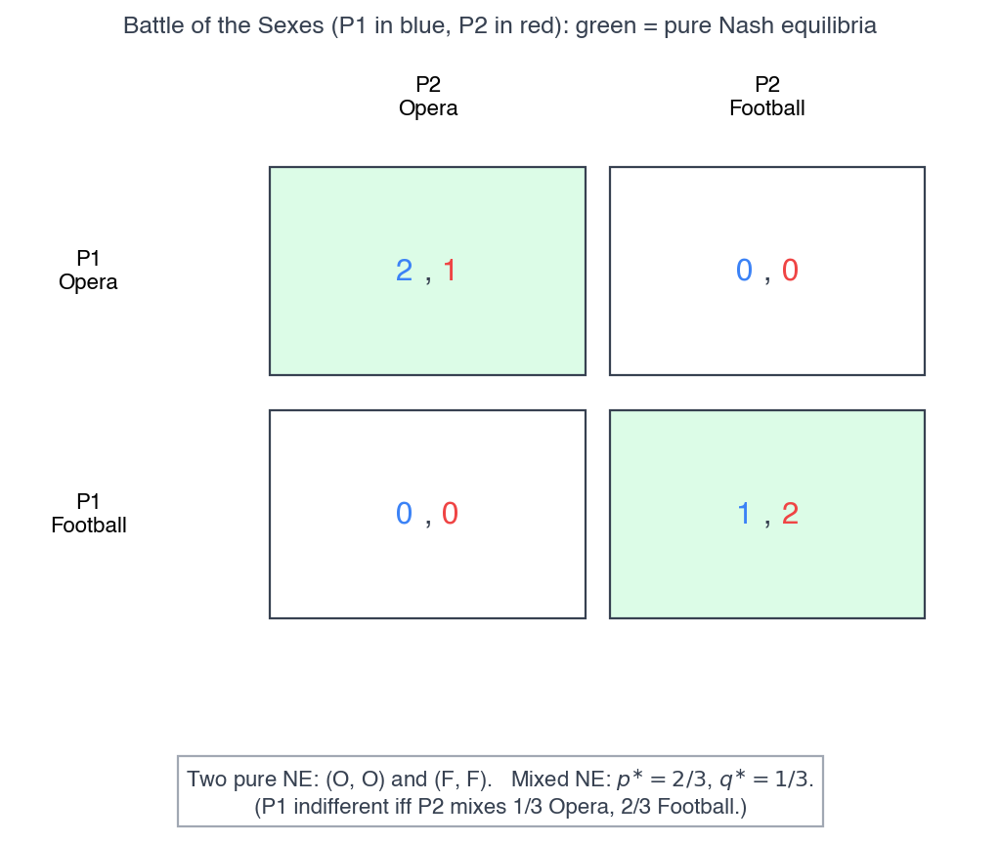
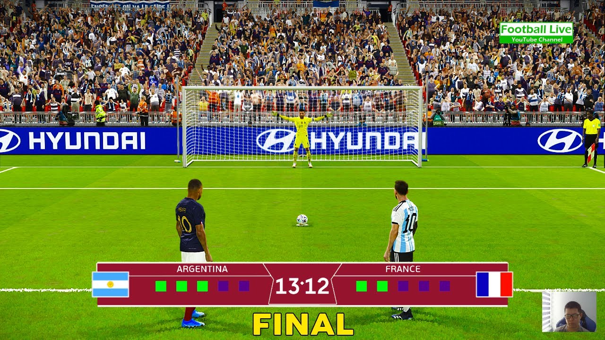
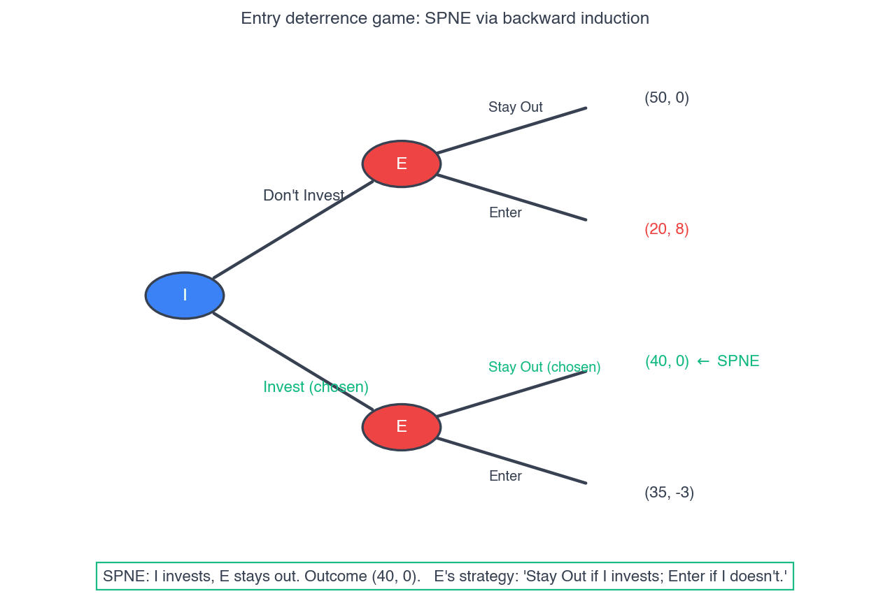
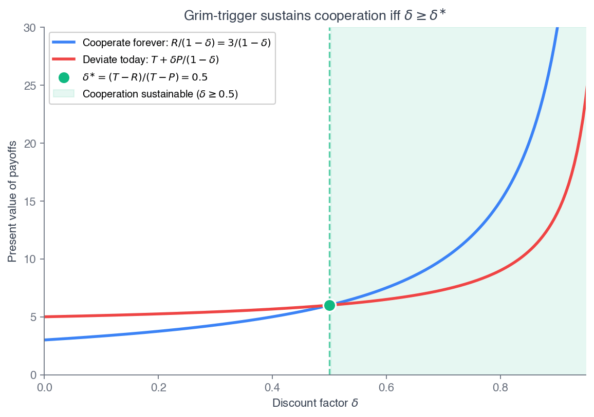

ECON 2316 • Microeconomic Theory • Chapter 14
Game Theory
Chapter 13 solved oligopoly games — Cournot, Bertrand, Stackelberg — but never asked what an equilibrium really is. Game theory is the machinery underneath: players, strategies, payoffs, and the one profile from which no one wants to deviate.
Dr. Richeng Piao
Department of Economics
Northeastern University — 100 min
Learning Objectives
By the end of class today, you will be able to…
1
Define a normal-form game and find Nash equilibria in pure strategies; apply dominance and iterated elimination. (Bloom L3)
2
Solve for mixed-strategy Nash equilibria using the indifference condition. (Bloom L4)
3
Solve sequential games by backward induction and identify the subgame-perfect equilibrium. (Bloom L4)
4
Derive the grim-trigger discount-factor threshold and explain when repetition sustains cooperation. (Bloom L5 — central result)
5
Apply the framework to real strategy — entry deterrence, OPEC+, algorithmic collusion, and auctions. (Bloom L3)
Ch 13 Solved the Games. Ch 14 Asks Why.
Ch 13 — the answers
- Cournot: symmetric output \(q^{\ast} = \frac{a-c}{(N+1)b}\)
- Bertrand: \(P = MC\) with two firms
- Stackelberg: leader rides the reaction curve
- We wrote FOCs and solved — but never asked why these are the right solutions
Ch 14 — the machinery
- What is an equilibrium? → Nash equilibrium
- Cournot = Nash of the quantity game
- Stackelberg = subgame-perfect equilibrium of the sequential game
- And: when can rivals sustain the cartel they all want?
One backbone, made explicit. A game is players, strategies, and payoffs that depend on the entire profile of choices. An equilibrium is a profile from which no player wants to deviate unilaterally — the Nash equilibrium (Nash 1950; Nobel 1994). Ch 13's solutions were all Nash equilibria; we just hadn't named the concept.
Two Gas Stations and One App
Two stations across a four-lane road sell identical unleaded, prices on tall signs. For decades they held an uneasy truce near \$3.30/gal — each watching the other, rarely cutting.
Late 2024: a price-comparison app (“FuelTrack”) let drivers see every station's price in one tap. Within six weeks both were undercutting each morning and rebuilding by evening — margins collapsed to cost plus card fees.
Same owners, same costs, same market size. One technology changed the speed information traveled — and the equilibrium flipped from coordination to undercutting.
\$3.30
old truce price
\$3.27
undercut, post-app
6 wk
to flip the equilibrium
1 tap
what changed
Game theory is the apparatus that tells us why the equilibrium moved. A game = players (the two stations), strategies (prices), payoffs (daily revenue, depending on both choices). The app didn't change the players or the costs — it changed the game, and the equilibrium followed. By the end of class you'll be able to write down the game behind any oligopoly story and predict how a parameter shift moves it.
The big idea
Game Theory Basics
Players, strategies, payoffs — and the dilemma at the heart of it
What “Game Theory” Is Not (Necessarily) About

It has nothing (necessarily) to do with dice, poker, sports, or video games. The word “game” is a metaphor — for any situation where your best move depends on what someone else does.
You Are Already Playing Many “Games”
Any time you anticipate someone else’s move before making yours, you’re playing a strategic game:
Friends
Enemies
Family
Your employer
Classmates
Driving (merging!)
Your reputation
Your professor
Strategy is everywhere

A tennis serve: aim where the returner won’t guess.

Coke vs Pepsi: each price set with one eye on the other.
From a tennis serve to a cola price war, the logic is identical: your best move depends on what the other player does. That interdependence — not dice or trophies — is what game theory is about.
Game Theory: A Definition
The study of strategic decision-making — when multiple players each act in their own best interest and their outcomes depend on the actions of others. A modern lens on strategy and competition.

Which tool? (a strategic choice)

Fight or flee? (depends on the player)
You already think strategically — even in a game like Minecraft. Game theory just makes the logic explicit.
What Is Not a Strategic Situation?
Perfect Competition
Monopoly
Price Taker — too small to matter
Price Maker — no rivals to watch
Neither extreme is strategic: the perfect competitor can’t move the price, and the monopolist has no one to react to. Only oligopoly — a few firms watching each other — is a game.
Modeling frameworks
Game Theory vs. Decision Theory
Before the equilibria: the two ways economics models behavior — and where strategy breaks the mold
The Two Major Models of Economics as a “Science”
Optimization
- Agents have objectives they value
- Agents face constraints
- Make tradeoffs to maximize objectives within constraints
Equilibrium
- Agents compete with others over scarce resources
- Agents adjust behaviors based on prices
- Stable outcomes when adjustments stop
Both pillars belong to decision theory — the traditional toolkit, where you optimize against fixed prices or a market you can't move. Game theory is the third way: for when a few agents' choices directly move each other's payoffs.
Game Theory vs. Decision Theory — Models I
Traditional economic models are often called “Decision theory”:
Optimization models
Ignore all other agents — you focus only on how you maximize your objective within your constraints.
Consumers max utility; firms max profit, etc.
Game Theory vs. Decision Theory — Models II
Game theory models
Directly confront strategic interactions — each player optimally responds to the strategies others choose, settling at a stable profile of mutual best responses.
Outcome: Nash equilibrium
- No player wants to change strategy given all other players' strategies
- Each player is playing a best response against the others
Game Theory vs. Decision Theory — Models III
Traditional economic models are often called “Decision theory”:
Equilibrium models
Assume there are so many agents that no single agent's decision can affect the outcome.
Firms are price-takers, or the only buyer or seller
Ignores all other agents' decisions!

The classic game
Prisoner’s Dilemma
The Cold-War problem that became game theory’s most famous game
A Little History — September 1949
A US B-29 caught radioactive isotopes (Ce-141, Y-91) drifting over the Pacific — their half-lives dated a blast. The Soviets had the bomb.

| Isotope | Half-life |
|---|---|
| Ce-141 | ~32.5 days |
| Y-91 | ~58.5 days |


Prisoner’s Dilemma: Attack or Peace?
With both superpowers now armed, some US leaders pushed for a preemptive strike. Attack first — or keep the peace?


Game Theory in 1950

1944 — Theory of Games and Economic Behavior: von Neumann & Morgenstern launch game theory (2-player zero-sum games, the minimax method).
1950 — Nash Equilibrium: John Nash proves every finite game has a set of strategies where no player can gain by changing alone.
1950 — Prisoner’s Dilemma: Merrill Flood & Melvin Dresher at RAND formulate it — two rational players, each in self-interest, end up worse off than if they’d cooperated.

Relevant Topics
Models of Competition
• Price competition (Bertrand)
• Quantity competition (Cournot)
• Market entry (Stackelberg)
Applications

A Normal-Form Game: Three Ingredients
PLAYERS
\(\{1, \ldots, n\}\)
kicker & keeper
STRATEGIES
\(S_i\)
left or right
PAYOFFS
\(u_i(s_1,\ldots,s_n)\)
goal or save
Choices are simultaneous in the formal sense — no player observes another's before choosing. The payoff matrix records every profile: row = player 1, column = player 2, cell = \((u_1, u_2)\).
A strategy strictly dominates when it pays more for every rival choice: \(u_i(s_i, s_{-i}) > u_i(s_i', s_{-i})\) for all \(s_{-i}\). Never play a strictly dominated strategy — the sharpest prediction game theory offers.
A penalty kick is a game.
Game Theory Assumptions
Mutual interdependence: each player recognizes that outcomes depend on others’ actions.
Rationality: players choose strategies to maximize expected payoffs, given beliefs about others.
Clearly defined preferences: players have specific preferences to maximize (or minimize) payoffs.
Simultaneous-Move vs. Sequential-Move
Simultaneous-Move (basketball)
Sequential-Move (chess)
- Players decide at the same time — without knowing the other’s choice.
- Analyzed with payoff matrices (§14.1–14.3).
- Players decide one after another — later players see earlier actions.
- Analyzed with game trees (§14.4).
The First Game
Grade Game
A live prisoner’s dilemma — with your actual grade on the line
The Grade Game — Place Your Bid

Without showing your neighbors, secretly bid alpha (△) or beta (□). I’ll randomly pair your form with one other — neither of you ever learns whose.
Place your bid ↓
The Draw — Who Got Paired?
Each click randomly pairs two anonymous bids and reveals their grades. △ = alpha, □ = beta.
§14.1
Normal-Form Games & Dominance
Players, strategies, payoffs — and the simplest prediction: never play a strictly dominated strategy
Outcome Matrix
Outcome matrix: a table that records every possible result of the game — the grades for the row player and the column player at each combination of choices. Far easier to absorb than four sentences.
| My Pair | |||
| Alpha | Beta | ||
| Me | Alpha | B− | A |
| Beta | C | B+ | |
My Grades
| My Pair | |||
| Alpha | Beta | ||
| Me | Alpha | B− | C |
| Beta | A | B+ | |
Pair’s Grades
A More Compact Representation
Superimpose the two tables — my grade first, my pair’s grade second:
| My Pair | |||
| Alpha | Beta | ||
| Me | Alpha | B− , B− | A , C |
| Beta | C , A | B+ , B+ | |
1st grade = row player (my grade) • 2nd grade = column player (my pair’s grade)
Solution Concepts
• To be a useful model, we need a solution concept to predict the outcome — otherwise, what’s the point?
• Game theory looks for the equilibrium — a no-regrets solution.
• The trick: put yourself in your pair’s shoes. Is there a strategy you always want to play?
If my pair plays Alpha…
| My Pair | |||
| Alpha | Beta | ||
| Me | Alpha | B−,B− | A,C |
| Beta | C,A | B+,B+ | |
→ I prefer Alpha (B− > C)
If my pair plays Beta…
| My Pair | |||
| Alpha | Beta | ||
| Me | Alpha | B−,B− | A,C |
| Beta | C,A | B+,B+ | |
→ I prefer Alpha (A > B+)
Dominant Strategy
Dominant strategy: the choice that yields your highest payoff regardless of what the other player does. If both players have one, the outcome is a Nash equilibrium.
Go column by column — circle my best reply to each of my pair’s choices:
| My Pair | |||
| Alpha | Beta | ||
| Me | Alpha | B−,B− | A,C |
| Beta | C,A | B+,B+ | |
Pair plays Alpha → I get B− (Alpha) vs C (Beta) → Alpha (B− > C)
Pair plays Beta → I get A (Alpha) vs B+ (Beta) → Alpha (A > B+)
My best reply is Alpha in both columns → Alpha is dominant. My pair reasons identically, so their best reply is only Alpha too. Both play Alpha — a Prisoner’s Dilemma. So why can’t they both just play beta?
Nash Equilibrium
Nash equilibrium: an outcome where each player is choosing their best strategy given everyone else’s. No player has an incentive to unilaterally deviate — doing so would only make them worse off.
| My Pair | |||
| Alpha | Beta | ||
| Me | Alpha | B−,B− | A,C |
| Beta | C,A | B+,B+ | |
The Prisoner’s Dilemma: the Nash equilibrium (B−, B−) is inferior for both compared with cooperating at (B+, B+). Each has a dominant strategy that leads to a worse outcome — because they can’t trust the other to cooperate.
Kung Fu Tea vs. Husky Boba — Solving the Duopoly
Where the payoffs come from: the more total cups the two sell, the lower the price (\(P = 19.99 - 0.03Q\)), and profit \(= (P - \$1)\times q\). Each cell = (Kung Fu Tea profit, Husky Boba profit). Best-response analysis: find each firm’s best reply.
| Husky Boba | |||
| Restrict (q=158) | Flood (q=211) | ||
| Kung Fu Tea | Restrict | $1,503 KFT $1,503 Husky |
$1,251 KFT $1,671 Husky |
| Flood | $1,671 KFT $1,251 Husky |
$1,336 KFT $1,336 Husky | |
Husky Restricts → KFT gets $1,671 (Flood) vs $1,503 (Restrict) → KFT Floods
Husky Floods → KFT gets $1,336 (Flood) vs $1,251 (Restrict) → KFT Floods
Flood wins either way — it’s Kung Fu Tea’s dominant strategy. By symmetry, Husky’s too.
Nash equilibrium: (Flood, Flood) → ($1,336, $1,336). Both flood, the price falls to \(\$7.33\), and each earns less than the $1,503 they’d make by colluding at Restrict — but neither can trust the other. The cartel collapses: a Prisoner’s Dilemma.
Normal-Form Games & the Prisoner’s Dilemma
A normal-form game specifies three things:
Players \(\{1, 2, \ldots, n\}\)
Strategy sets \(S_i\) — choices available to each player
Payoffs \(u_i(s_1, \ldots, s_n)\) — depend on the whole profile
Choices are simultaneous; the payoff matrix lists each cell as \((u_1, u_2)\), row player first. A strategy strictly dominates when \(u_i(s_i, s_{-i}) > u_i(s_i', s_{-i})\) for every rival choice — never play a dominated one.
The canonical Prisoner’s Dilemma
Two firms choose Cooperate (high price) or Defect (low price). Payoffs satisfy \(T > R > P > S\) with canonical values \((T, R, P, S) = (5, 3, 1, 0)\):
Goal: find each firm’s dominant strategy and the equilibrium.
Walkthrough 14.1 — The Prisoner’s Dilemma
Problem. Two firms choose Cooperate (high price) or Defect (low price). Payoffs satisfy \(T > R > P > S\) with canonical values \((T,R,P,S) = (5,3,1,0)\). Find each firm’s dominant strategy and the equilibrium.
| Coop | Defect | |
|---|---|---|
| Coop | 3, 3 | 0, 5 |
| Defect | 5, 0 | 1, 1 |
Cell = (Firm 1, Firm 2).
green = equilibrium; amber = Pareto-best.
Set up & solve
A strategy is dominant if it’s best against every rival choice. Check Firm 1 column by column.
vs Cooperate: Defect \(5 > 3\). vs Defect: Defect \(1 > 0\). → Defect dominates.
Symmetric for Firm 2 → equilibrium \((\text{Defect},\text{Defect}) = (1,1)\).
Check
\((\text{Cooperate},\text{Cooperate}) = (3,3)\) pays both more than \((1,1)\).
Yet each gains \(T - R = 2\) by defecting on a cooperator — so \((C,C)\) is not a Nash equilibrium.
The dominant-strategy outcome is Pareto-dominated.
Takeaway. Individual and collective rationality conflict: both defect and land at \((1,1)\), worse than the \((3,3)\) they both want. No rational one-shot player escapes — the temptation gap \(T-R\) is too large. §14.5 asks when repetition closes it.
Poll — Why Don’t They Cooperate?
The two firms could both Cooperate (high price) and earn (3, 3) instead of (1, 1). A friend says “just agree to both Cooperate.” What’s the problem?
A. No problem — they’ll both Cooperate and stay there
B. Each is tempted to secretly Defect (earn 5 on a cooperator) — so the deal unravels
C. Cooperating (high prices) is illegal, so they can’t
D. Customers wouldn’t notice the difference anyway
Click your answer. Press ↓ for results.
Poll Results
Answer: B. The cooperative (Cooperate, Cooperate) = (3, 3) is not stable. Each firm earns 5 by defecting while the other cooperates — so both are tempted, and the deal collapses to (Defect, Defect) = (1, 1).
That is the prisoner’s dilemma: the agreement is exactly the unstable cell. §14.5 shows how repetition can rescue it.
Pareto Improvement, But Not Individually Stable

Both confessing (2, 2) is the Nash equilibrium — stable, but both go to jail. Both staying silent (1, 1) is better for both (a Pareto improvement) — yet each is tempted to defect, so it won’t hold on its own.
The Prisoner’s Dilemma Is Everywhere
The same trap shows up across economics — rational individuals, collectively worse off:
Joint project — each member is tempted to avoid effort (free-ride).
Price competition — firms undercut each other, lowering profits.
Advertising war — firms keep spending to compete → a suboptimal Nash.
Common resources — carbon emissions, overfishing (Ch 17).
Potential solutions? Communication, repeated play, binding contracts, regulation — anything that lets players trust cooperation. (We’ll see repeated games in §14.5.)
A real-world prisoner’s dilemma
The British game show Golden Balls: two strangers, one jackpot, one choice — Split or Steal.
They’re allowed to talk first — so will communication help?
Split or Steal — The Setup
Two contestants have built up a jackpot. Each secretly picks a Split or Steal ball. ▶ Click to watch (sound on).
Payoff Matrix

Communication: allowed — the players can talk it out before they choose.
Nick’s Gambit
Nick tells Abraham: “I’m going to Steal — but I promise I’ll split the money with you afterward.” ▶ Click to watch (sound on).
Nash Equilibria and Commitment
| Nick | |||
| Steal | Split | ||
| Abraham | Steal | $0 / $0NE | $13.6k / $0NE |
| Split | $0 / $13.6kNE | $6.8k / $6.8k | |
Counting weak ties, all 3 gold cells are Nash equilibria — in each, the $0 loser can’t do any better by switching.
Did communication help? Not on its own — talk is “cheap.” Steal weakly dominates, so the trap both fall into is the focal (Steal, Steal) = $0 each.
Commitment → removing options. Nick committed to Steal & promised to share — removing Abraham’s reason to Steal. So Abraham split… and Nick split too. $6,800 each.
Strict vs Weak Dominance — Golden Balls & the Ad Ban
\(s_i\) weakly dominates \(s_i'\) if \(u_i(s_i, s_{-i}) \geq u_i(s_i', s_{-i})\) for all \(s_{-i}\), with strict inequality somewhere. Ties allowed.
We mostly use strict dominance — it gives sharp predictions. Weak dominance can be ambiguous about which equilibrium players coordinate on.
The PD's bite: even knowing cooperation pays more, a rational player defects. The only escapes are commitment (Nick), repetition (§14.5), or an outside rule.
Back to Golden Balls
Golden Balls is a weak-dominance game: Steal weakly dominates Split — you’re never worse off stealing, and you take the whole jackpot if the rival splits. So the focal outcome is (Steal, Steal) = \(\$0\) each, and cheap talk alone can’t fix it.
The 1971 cigarette TV/radio ad ban shows the outside-rule escape: Congress banned advertising for all firms at once, ad spending fell \(\sim 25\%\), and tobacco profits rose — a forced cooperation none could reach alone.
Strict dominance gives a sharp prediction; weak dominance (Steal vs Split) needs more care. Either way, the cooperative cell is never reached unilaterally — it takes commitment, repetition, or an outside rule.
§14.2
Pure-Strategy Nash Equilibrium
When no one has a dominant strategy — mutual best responses, and iterated elimination
Nash Equilibrium: Mutual Best Responses
A profile \((s_1^{\ast}, \ldots, s_n^{\ast})\) is a Nash equilibrium if every \(s_i^{\ast}\) is a best response to the others:
\(u_i(s_i^{\ast}, s_{-i}^{\ast}) \geq u_i(s_i, s_{-i}^{\ast}) \quad \forall\, s_i\)
Given what everyone else does, no one wants to switch. The PD's \((D,D)\) is Nash — but Nash applies even with no dominant strategy. Take Battle of the Sexes: P1 prefers Opera, P2 prefers Football, both prefer being together.
No dominant strategy: P1's best response is Opera if P2 picks Opera, Football if P2 picks Football. Best responses depend on the rival — the general case.

Two pure NE on the diagonal — coordination, but disagreement over which.
Walkthrough 14.2 — Pure NE and Iterated Elimination
Problem. (1) Battle of the Sexes (from the last slide): P1 prefers Opera, P2 prefers Football, both prefer being together — \((O,O)=(2,1)\), \((F,F)=(1,2)\), off-diagonal \((0,0)\). Find all pure-strategy Nash equilibria. (2) Then run iterated elimination of strictly dominated strategies (IESDS) on the \(3\times3\) game below.
Part 1 — BoS pure NE
Check each cell for a profitable deviation. At \((O,O)=(2,1)\): P1→F gives \(0<2\); P2→F gives \(0<1\). Nash. ✓
By symmetry \((F,F)=(1,2)\) is also Nash. Off-diagonal cells are not — someone always gains by switching to join.
Two pure NE — uniqueness is the exception, not the rule.
Part 2 — IESDS on a \(3\times3\)
| \(X\) | \(Y\) | \(Z\) | |
|---|---|---|---|
| \(A\) | 4,3 | 2,7 | 0,4 |
| \(B\) | 5,5 | 5,1 | 2,0 |
| \(C\) | 3,4 | 1,6 | 1,2 |
R1: for P2, \(Y\) beats \(Z\) at every row → drop \(Z\). R2: for P1, \(B\) beats \(A\) and \(C\) → drop both. R3: P2 picks \(X\) (\(5>1\)).
Unique survivor: \((B,X) = (5,5)\).
Takeaway. IESDS (iterated elimination of strictly dominated strategies) is sound: every Nash equilibrium survives it. When one profile survives (as here), it is the unique NE. When more than one survives (as in BoS), multiple NE coexist.
Nash \(\neq\) Efficient, and Nash \(\neq\) Unique
Heads Up 14.1 — two traps
Trap 1: “Nash is rational play, so it must be the best joint outcome.” The PD refutes this: \((D,D)\) is the unique NE and Pareto-dominated by \((C,C)\). Nash is about individual rationality, not group welfare.
Trap 2: “A game has one equilibrium.” BoS has two pure NE. The model alone doesn't pick one — selecting requires a focal point (Schelling 1960): custom, communication, or a salient feature of the payoffs.
Recall from Principles — 1116 §13.3
1116 defined Nash equilibrium informally: “each player is choosing the best response to the others — no one wants to deviate unilaterally,” after John Forbes Nash Jr. (Nobel 1994).
The 1116 example was the gas-station price war: \((\text{Low}, \text{Low})\) is Nash because neither station gains by going High while the rival stays Low. Same definition — we now write best response as a formal correspondence and use IESDS to search.
Empirical IO often uses the symmetric equilibrium as the focal point for homogeneous industries; otherwise the model must stay agnostic and map the whole equilibrium set.
§14.3
Mixed-Strategy Nash Equilibrium
When no pure profile is stable — randomize, and make your rival indifferent
Penalty Kick


A penalty shootout is a mixed-strategy game: the kicker can’t commit to one side (the goalie would learn it), and the goalie can’t either. Each must keep the other guessing.
Mixed Strategies

THE PAYOFF MATRIX FOR THIS GAME:
| Goalie: Left | Goalie: Right | |
|---|---|---|
| Kicker: Left | 0, 1 ✓ | ✓ 1, 0 |
| Kicker: Right | ✓ 1, 0 | 0, 1 ✓ |
No single cell has two checks — so there is no pure-strategy equilibrium.
But a Nash equilibrium still exists: it calls for each player to randomize across the two strategies.
Mixed Strategies
As highlighted by the previous slides, sometimes there is no pure-strategy equilibrium. A player’s best option may be to choose actions randomly from a set of pure strategies.
Mixed strategy
A strategy in which the player randomizes his or her actions — a probability distribution over the available pure strategies.
Our example: a penalty kick
- The kicker can kick the ball left or right.
- The goalie chooses which way to dive.
- Same side → the goal is saved; otherwise it is scored.
Neither player can commit to one side — the rival would simply learn it and best-respond. The only stable play is to randomize, keeping the other guessing.
Mixed Strategies — The Goalie’s Best Response
The goalie only saves by diving the same way the kicker kicks. If the Kicker plays Left with probability \(p\): E[dive Left] = \(p\) · E[dive Right] = \(1-p\). The goalie picks whichever is larger.
Kicker: 50% Left
Dive Left: E = 0.50
Dive Right: E = 0.50
Goalie is indifferent — no way to exploit the kicker.
Nash equilibrium
Kicker: 80% Left
Dive Left: E = 0.80
Dive Right: E = 0.20
Best response: dive LEFT (0.80 > 0.20).
Kicker should switch to Right
Kicker: 20% Left
Dive Left: E = 0.20
Dive Right: E = 0.80
Best response: dive RIGHT (0.80 > 0.20).
Kicker should switch to Left
Only at 50/50 is the goalie indifferent, so the kicker can’t be exploited — that is the mixed-strategy Nash equilibrium. Any predictable mix lets the goalie pick a pure best response, which the kicker would then want to deviate from. (With asymmetrical payoffs, the equilibrium mix shifts away from 50/50.)
Does Anyone Actually Mix? — Penalty Kicks
Theory and Data 14.1 — Chiappori-Levitt-Groseclose (2002, AER)
A penalty kick is stylized matching pennies: kicker picks a corner, goalie picks a corner; same corner favors the goalie. The mixed-NE prediction: scoring probability is equal across the kicker's choices (else shift weight).
French + Italian top divisions, 1995–2000: Left and Right scoring rates were 76% vs 76% — statistically indistinguishable, exactly the indifference condition. Replicated in tennis serves (Walker-Wooders 2001) and Spanish soccer (Palacios-Huerta 2003).
Heads Up 14.2 — a pure NE may not exist, but a mixed one always does
Nash's 1950 theorem: every finite game has at least one Nash equilibrium (possibly mixed). Can't find a pure NE? Solve the indifference condition for the mixed one.
The counterpoint: Kovash-Levitt (2009) find MLB pitchers and NFL play-callers deviate from minimax — too many fastballs, too few passes. When the action space is large and cognitive load high, players fall into predictable patterns. Mixed-NE holds for penalty kicks and tennis, not for baseball.
§14.4
Sequential Games & Backward Induction
When one player moves first — credible commitment, non-credible threats, and SPNE
Trees, Subgames, and Credible Threats
Many interactions are sequential: one firm moves, others observe, then respond (Stackelberg was one). The extensive form is a tree — decision nodes labeled by player, branches for actions, payoffs at the leaves.
A strategy specifies an action at every node where it's your turn — even off-path nodes, because we must evaluate counterfactuals.
A subgame starts at any node and includes everything below it.
A subgame-perfect Nash equilibrium (SPNE) induces a Nash equilibrium in every subgame — including off-path ones. It rules out non-credible threats: actions that wouldn't actually be optimal if that node were reached.
Backward induction finds it: start at the deepest nodes, pick each player's optimal action, fold those payoffs up into the parent, and repeat to the top.
Why SPNE, not just Nash? A plain Nash equilibrium can rest on a threat the threatener would never carry out. SPNE demands the threat be optimal at the node where it would be executed — credibility, built in.
Walkthrough 14.5 — Entry Deterrence (Dixit 1980)
Problem. Incumbent I chooses Invest (sink \$10M, lowering its MC) or Don't. Then entrant E chooses Enter or Stay Out. Find the SPNE by backward induction.
After Don't Invest: E earns \(8\) (Enter) vs \(0\) (Out) → Enter. Outcome \((20, 8)\).
After Invest: E earns \(-3\) (Enter) vs \(0\) (Out) → Stay Out. Outcome \((40, 0)\).
Stage 1: I compares \(20\) (Don't) vs \(40\) (Invest) → Invest.
SPNE: I invests; E plays “Stay Out if I invested, Enter if not.” On path: \((40, 0)\) — entry deterred.

Backward induction: solve E's nodes first, then I's choice.
Takeaway. The threat “I'll fight with low MC” is credible only after the \$10M is sunk. Without the investment, E enters anyway. The sunk cost is the commitment device — an action that's inefficient on its own but changes the post-entry game. Overcapacity, R&D, exclusive contracts all work this way.
Application: Google's \$26B Default Deals as Commitment
\$26B
/yr to Apple, Samsung, Mozilla for default search
Aug 2024
Judge Mehta: Sherman §2 violation
The DOJ argued the payments are a Dixit-style entry barrier: Google's commitment to keep paying for default placement deters Bing and DuckDuckGo, who can't match the payments — they have less monopoly rent to share with the platforms.
The remedy phase (concluded Sept 2 2025) rejected the DOJ's request to divest Chrome and Android. Mehta chose a behavioral remedy: no exclusive default contracts going forward; share some user-interaction data with rivals.
Whether banning the contract unwinds the commitment is now the open empirical question — watch Bing's share and default placements on new phones over 2025–2027.
Walkthrough 14.6 — Stackelberg Is an SPNE
Problem. Recall Ch 13's Stackelberg: \(P = 100 - Q\), both \(MC = 20\). Leader picks \(q_1\); follower observes and picks \(q_2\). Solve by backward induction — and recognize the result.
Solve
Stage 2 (follower): \(q_2 = (80 - q_1)/2\).
Stage 1 (leader): substitute → \(\pi_1 = (40 - q_1/2)q_1\); FOC \(\Rightarrow q_1^{\ast} = 40\).
\(q_2^{\ast} = 20\), \(Q = 60\), \(P = \$40\), \(\pi_1 = \$800\), \(\pi_2 = \$400\).
Check vs Cournot
Cournot: \(Q = 53.33\), \(P = \$46.67\), each \(\pi = \$711\), total \(\$1,422\).
Stackelberg total \(60 > 53.33\) → lower price (\(\$40 < \$46.67\)). Leader earns more (\$800), follower less (\$400); industry \$1,200.
It's the SPNE of the 2-stage game — exactly Ch 13's W13.6 numbers.
Takeaway. Ch 13's Stackelberg solution is the subgame-perfect equilibrium of the sequential quantity game. The first-mover advantage is the formal content of “leader commits to high output, follower best-responds with less” — and the commitment is credible because produced output is irreversible.
§14.5
Repeated Games & the Discount Factor
The one-shot PD says defect. But gas stations price every day — does repetition rescue cooperation?
Walkthrough 14.7 — Finite Repetition Unravels
Problem. Two firms play the canonical PD \((5,3,1,0)\) for exactly \(T=2\) rounds. Both know there are two rounds. What is the SPNE?
Round 2 is the last round — no future, so it's a one-shot PD. Unique NE: \((D,D)\).
Round 1: whatever you do, round 2 is already locked at \((D,D)\). No future reward for cooperating now → round 1 is also one-shot → \((D,D)\).
SPNE: defect in both rounds. Total \(1+1 = 2\) each — vs \(3+3 = 6\) under full cooperation. Unraveling cost: \(4\).
The chain-store paradox (Selten 1978)
Backward induction unravels any finite horizon: the last round reverts to one-shot, so the second-to-last does too, all the way back to round 1.
An incumbent who plans to fight \(T\) entrants can't credibly threaten the first — the last-market threat is empty (no future entrants), which unwinds the whole chain backwards.
Real cooperation needs an infinite (or uncertain) horizon, not a finite one.
Poll #2 — Ten Rounds, Known End
The same two firms now agree to cooperate and play the PD for exactly 10 rounds — and both know round 10 is the last. Can they sustain cooperation?
45 sec to vote
Answer: C — It Unravels to Round 1
Round 10 is one-shot → \((D,D)\). Then round 9 has no future to protect → \((D,D)\). The cascade runs all the way back to round 1.
Trap D: a high \(\delta\) sustains cooperation only with an infinite (or uncertain) horizon. A finite, known end-date unravels for any \(\delta < 1\). The fix that makes real cooperation work is removing the known last round — next.
Calculus Corner 14.2 — The Grim-Trigger Threshold
Grim trigger: cooperate until someone defects, then defect forever. Discount factor \(\delta \in [0,1)\). Compare two streams:
Cooperate forever: \(\text{PV}^{\text{coop}} = \dfrac{R}{1-\delta}\).
Defect once, then punished: \(\text{PV}^{\text{def}} = T + \dfrac{\delta P}{1-\delta}\).
Cooperation is an SPNE iff \(\text{PV}^{\text{coop}} \geq \text{PV}^{\text{def}}\). Solving:
\(\delta \geq \delta^{\ast} = \dfrac{T - R}{T - P}\)
Canonical PD \((5,3,1,0)\): \(\delta^{\ast} = 2/4 = 0.5\). Patient enough (\(\delta \geq 0.5\)) → cooperate. Two ways to make it easier: shrink temptation \(T-R\), or sharpen punishment \(T-P\).

Right of \(\delta^{\ast}\): cooperating forever beats defecting once.
Drive the Threshold: When Does Cooperation Survive?
Grim trigger: blue = PV of cooperating forever, red = PV of defecting once. The green region (\(\delta \geq \delta^{\ast}\)) is where cooperation is sustainable. Drag \(\delta\) to move the marker.
Walkthrough 14.8 — The Cournot Cartel by Grim Trigger
Problem. Two firms, \(P = 100 - Q\), \(MC = 20\), infinite horizon. Grim trigger: produce the cartel quantity; if anyone deviates, revert to Cournot-Nash forever. Find \(\delta^{\ast}\).
Three per-period payoffs
Cartel: \(q^M = 20\), \(P^M = \$60\), \(\pi^M = \$800\).
Deviate (best-respond to rival's \(20\)): \(q = 30\), \(P = \$50\), \(\pi^{\text{dev}} = \$900\).
Punishment (Cournot-Nash): \(\pi^{C} = \$711.11\).
Apply the threshold
\(\delta^{\ast} = \dfrac{\pi^{\text{dev}} - \pi^{M}}{\pi^{\text{dev}} - \pi^{C}} = \dfrac{900 - 800}{900 - 711.11} = \dfrac{9}{17} \approx 0.529\).
Check at \(\delta = 9/17\): \(\text{PV}^{\text{coop}} = 800/(8/17) = \$1,700\); \(\text{PV}^{\text{def}} = 900 + (9/17)(711.11)/(8/17) = \$1,700\). Equal at the threshold. ✓
Takeaway. \(\delta^{\ast} \approx 0.53\) is well within realistic corporate patience, so a duopoly cartel is easy to sustain. Adding firms raises \(\delta^{\ast}\) (three firms \(\approx 0.57\)) — each firm's cartel share shrinks while the deviation gain grows. That's why OPEC+ (many members) needs active monitoring, while textbook duopolies cooperate effortlessly.
Application: OPEC+ as a Repeated Cartel Game
OPEC+ is the largest functioning real-world repeated-game cartel. Two structural features keep it alive:
Monitoring. The Joint Ministerial Monitoring Committee tracks compliance and makes overproducers compensate with deeper later cuts — a multi-period punishment, exactly the grim-trigger threat.
Flexibility. Quotas are revised at quarterly meetings (Dec 2024 extension; Apr 5 2026 unwinding), preventing breakdown under demand shocks.

Cooperation collapses at demand shocks (2008, 2014–15, 2020) — then re-forms.
The compliance series is the grim-trigger model in the wild: cooperation holds in normal times, breaks when a shock makes defection's short-run gain spike past the punishment value, then re-forms (Green-Porter 1984 imperfect-monitoring dynamics). Monitoring + flexibility are how a many-member cartel keeps \(\delta^{\ast}\) attainable.
Algorithmic Collusion & the Folk Theorem
Theory and Data 14.2 — Calvano et al. (2020, AER)
Naive Q-learning pricing agents — no instruction to collude, no communication — independently learn supracompetitive prices with grim-trigger-style punishment phases. Cartel outcomes emerge from learning alone.
Two 2024 actions — do NOT conflate
DOJ + 8 state AGs v. RealPage (Aug 23 2024): Sherman §1 horizontal price coordination via a hub. FTC 6(b) inquiry (Jul 23 2024): a market study of surveillance pricing — not enforcement, different statute, different theory of harm.
Heads Up 14.4 — the folk theorem
Grim trigger is one case of a vast result (Friedman 1971; Fudenberg-Maskin 1986): for \(\delta\) near \(1\), any individually rational payoff is an SPNE. The sustainable set is huge — the theorem doesn't say which point gets played. Q-learning is one selection mechanism.

§14.6
The Framework's Reach
Auctions, R&D races, and where real players deviate from Nash
Application: FCC Spectrum Auctions
\$22.5B
Auction 110 (3.45 GHz), Jan 2022
Jun 2 2026
Auction 113 (AWS-3) begins
Spectrum is sold with heavy game-theoretic design — a clock phase (ascending prices, demand signaled each round) then an assignment phase. Auction 113 is the first since auction authority lapsed in 2023, restored by the 2024 Spectrum Act.
The theory backbone:
Vickrey (1961): in a second-price sealed-bid auction with private values, truthful bidding is weakly dominant.
Milgrom-Weber (1982): the linkage principle — open ascending auctions raise more revenue by reducing winner's-curse exposure.
Klemperer (2002): good design prioritizes attracting entry and deterring collusion over marginal revenue.
R&D Races and Where Players Deviate from Nash
The GLP-1 race
Novo's Wegovy (2021) vs Lilly's Zepbound (2023): R&D-timing competition that matured into pricing competition. Lilly cut LillyDirect vials to \$299–399 (Feb 2026); Novo announced a 50% Wegovy list cut to \$675 (effective Jan 2027). Approximately Stackelberg with Novo as leader, repeated-pricing dynamics layered on top.
Behavioral game theory
Real one-shot play often deviates from Nash. Nagel's beauty contest (guess \(\tfrac{2}{3}\) of the average): Nash is \(0\), but guesses cluster at \(33\) and \(22\) — one or two rounds of reasoning.
Level-\(k\) / cognitive hierarchy (Camerer-Ho-Chong 2004): mean reasoning depth \(\approx 1.5\). QRE (McKelvey-Palfrey 1995): smoothed best response, often fits lab data better than Nash.
Nash is the central benchmark — not the only one. Use Nash for experienced players in well-defined games; use level-\(k\) or QRE to forecast deviations among inexperienced players in novel ones. The framework reaches far past Ch 13's markets.
Chapter 14 — The Equilibrium Ladder
Nash equilibrium (§14.1–14.2). A profile where no one deviates unilaterally. The PD shows it need not be efficient; BoS shows it need not be unique. IESDS is a sound search.
Mixed-strategy NE (§14.3). When no pure NE exists, randomize so the rival is indifferent. Nash (1950): every finite game has one.
SPNE (§14.4). Backward induction on the tree rules out non-credible threats. Stackelberg is the SPNE of the sequential quantity game.
Repeated games (§14.5). Finite horizons unravel; infinite ones sustain cooperation iff \(\delta \geq \frac{T-R}{T-P}\). Cournot cartel: \(\delta^{\ast} = 9/17\).
Folk theorem. For \(\delta\) near \(1\), almost any individually rational payoff is sustainable — selection (focal points, Q-learning) decides which.
Reach (§14.6). Entry deterrence, OPEC+, algorithmic collusion, spectrum auctions, R&D races — with level-\(k\)/QRE for real deviations.
One idea, escalating. Every concept is “no player wants to deviate” applied to a richer setting — pure, then mixed, then sequential, then repeated. The streaming four-firm constellation sat at static Nash, not above it: differentiation, not active collusion, explains the cluster. The thread retires here.
Part IV — complete
Questions?
Next: Chapter 15 — Decisions Under Uncertainty. We close strategic interaction and open Part V (Market Failures) with risk, expected utility, and insurance.